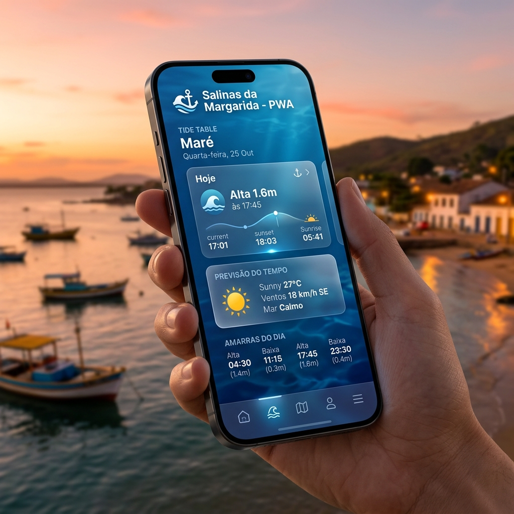

A tecnologia a favor de quem vive das águas. Tábua de marés, previsão do tempo, fases da lua e dicas de pesca na palma da sua mão.

Desenvolvido para pescadores e marisqueiras.
Dados precisos da Baía de Todos os Santos em tempo real, sem complicações.
Saiba as condições de vento, temperatura e mar antes de sair para o trabalho.
O ciclo lunar completo para ajudar na escolha dos melhores dias de pesca.
O app funciona mesmo sem internet, garantindo acesso às informações no mar.